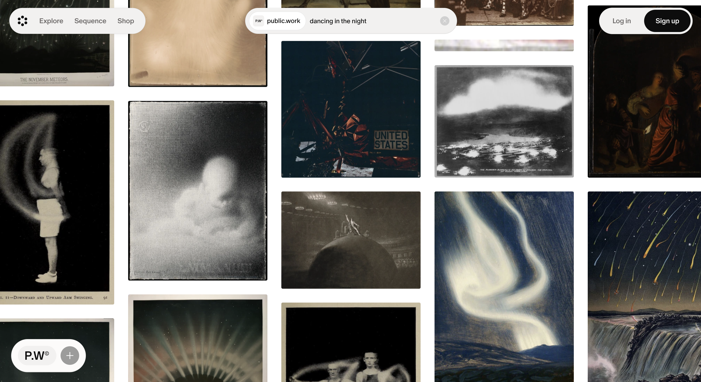

The one with catalogueing

Continuation of Research seminars:
Interviews with Yasser
I attended Yasser's research seminar, which focuses on interviews. He talked about the hallmarks of good quantitative research: which is mostly observations and a well-informed hypothesis. What I took away from the research seminar is to be very clear why this design research is being done. Even if the project is open-ended, it should have a purpose.
And about the research questions: it should be clear and with not too much academic jargon, to be easily understandable. That's something I should really take note on!
Catalogue drafts
Based on our experimentations and gatherings from the previous week, we were tasked to create a catalogue based on it. To capture the "infinite" feeling of time, where some thinkers theorised that the past, present and future exist within the present, I thought of creating a website with the infinite canvas effect. I've seen it with websites like Public Work by Cosmos, and I wanted to make use of that effect to also illustrate the the direction of time.

Consultation with Maeree and Kenza
Feedback for my catalogue ideas was that I needed to be careful with the infinite canvas, as it might end up looking like a mindmap. Currently, I also felt that it looked a little messy, and there was too much going on. Maeree brought up the idea of adding a four dimensional element to the website, so I might try that.
Reworking the catalogue
After the feedback session, I decided to do away with the infinite scroll. After all, I don't think I am at the stage to have so many colleteral that it warrants an infinite canvas.


Transforming sound into visuals
I really gotta work on my CPJ, man...